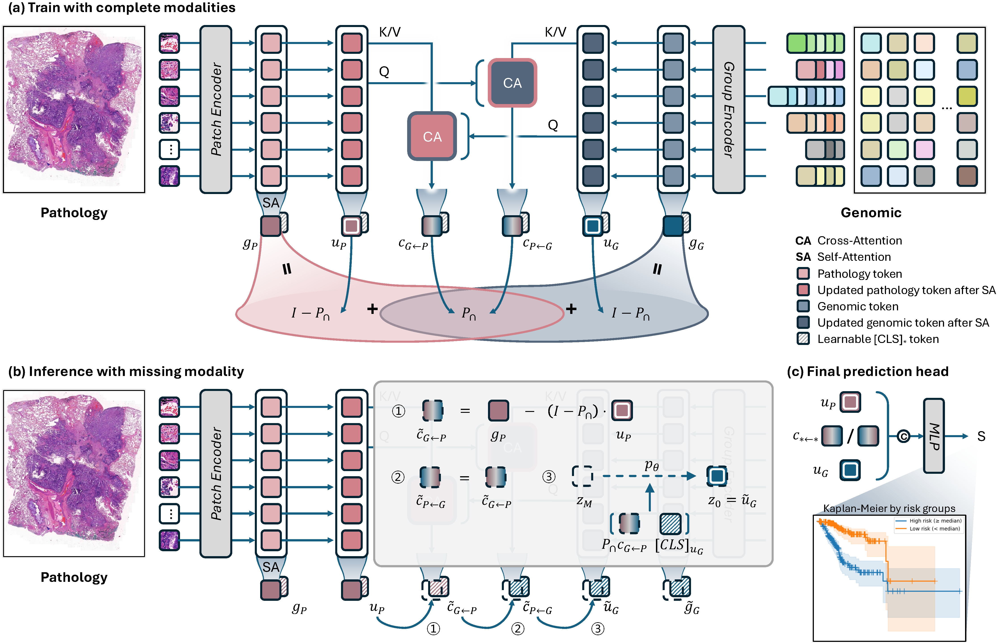

* Links will be available soon.

Overall architecture of MUST. The framework extracts global representations via self-attention, computes shared information through bidirectional cross-attention, and decomposes each modality into modality-specific and shared components through algebraic constraints in a learned low-rank subspace. Missing modality-specific components are reconstructed via conditional latent diffusion models.
Accurate survival prediction from multimodal medical data is essential for precision oncology, yet clinical deployment faces a persistent challenge: modalities are frequently incomplete due to cost constraints, technical limitations, or retrospective data availability. While recent methods attempt to address missing modalities through feature alignment or joint distribution learning, they fundamentally lack explicit modeling of the unique contributions of each modality as opposed to the information derivable from other modalities. We propose MUST (Modality-Specific representation-aware Transformer), a novel framework that explicitly decomposes each modality's representation into modality-specific and cross-modal contextualized components through algebraic constraints in a learned low-rank shared subspace. This decomposition enables precise identification of what information is lost when a modality is absent. For the truly modality-specific information that cannot be inferred from available modalities, we employ conditional latent diffusion models to generate high-quality representations conditioned on recovered shared information and learned structural priors. Extensive experiments on five TCGA cancer datasets demonstrate that MUST achieves state-of-the-art performance with complete data while maintaining robust predictions in both missing pathology and missing genomics conditions, with clinically acceptable inference latency.
@inproceedings{kim2026must,
title = {MUST: Modality-Specific Representation-Aware
Transformer for Diffusion-Enhanced Survival
Prediction with Missing Modality},
author = {Kim, Kyungwon and Hwang, Dosik},
booktitle = {Proceedings of the IEEE/CVF Conference on
Computer Vision and Pattern Recognition (CVPR)},
year = {2026}
}
This work was supported by the National Research Foundation of Korea (NRF) grant funded by the Korea government (MSIT) (No. RS-2025-16070382, RS-2025-02215070, RS-2025-02217919), Artificial Intelligence Graduate School Program at Yonsei University (RS-2020-II201361), the Korea Institute of Science and Technology (KIST) Institutional Program under Grant 26E0170.